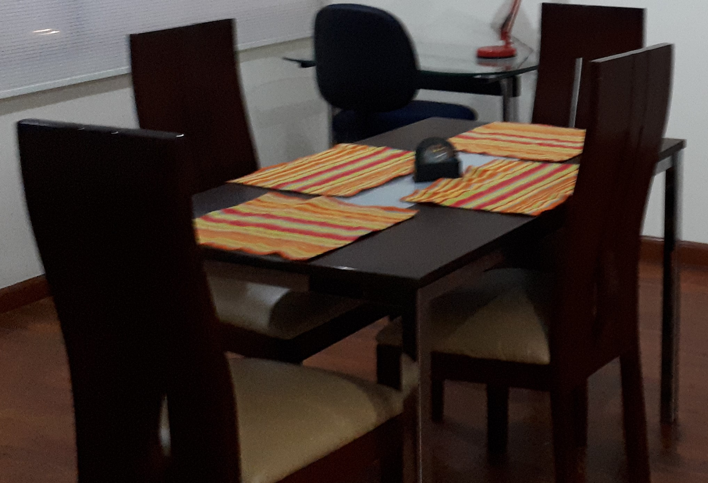

Gerente de Proyectos(PMP) bilingüe con especialización en Sistemas de
Información para las Organizaciones, con amplia experiencia trabajando
en multinacionales coordinando ciclos completos de implementación de
software. Amplia experiencia en levantamiento de requerimientos y
procesos a partir de entrevistas, reuniones y presentaciones.
Coordinación de proyectos de implementación (CRM, BPM) con equipos de
trabajo y clientes ubicados dentro y fuera del país. Experiencia en
presentaciones e implementación de casos para preventa, así como en
apoyo técnico a ventas. Habilidades diseñando mejoras y nuevas versiones
de los productos ya entregados. Alta capacidad de análisis y
modelamiento de negocio.
Idiomas